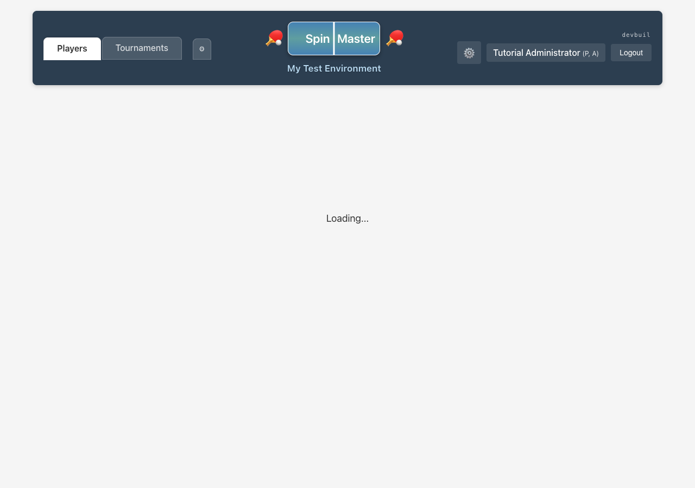
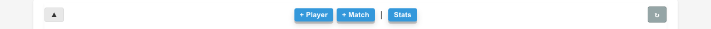
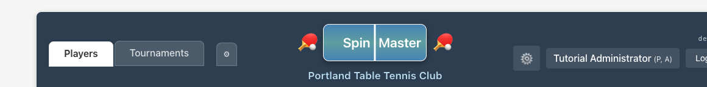
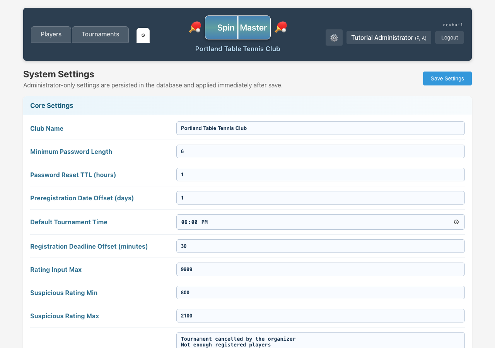

1. Sign in

2. Players page — full administration toolbar
+ Player appears for administrators. This demo user does not include Organizer, so + Tournament is not shown.


3. Header — system settings (gear)
Administrators get the extra tab that navigates to club / system configuration.

4. System settings screen

5. System settings — tournament rules to know
Beyond branding, System settings include tournament rule knobs organizers rely on. Notable for stop flows:
- Early Complete Min % (Round Robin) — default minimum share of competitive matches that must be played before an organizer can use Early Completion. Organizers may override this percentage in the stop dialog for a single action.
- Preregistration date offsets and cancel-reason presets used when creating or cancelling pre-registration listings.
Full organizer workflows for Abandon and Early Completion are documented in the Organizer tutorial.
6. Permissions at a glance
Add and fully edit any member; manage roles, rating, active status
Admin-only member settings (invites, password reset flows where implemented)
Open System settings
Create tournaments unless
ORGANIZER is also assigned
For day-to-day event directors, assign both ADMIN and ORGANIZER when they should manage accounts and run tournaments.